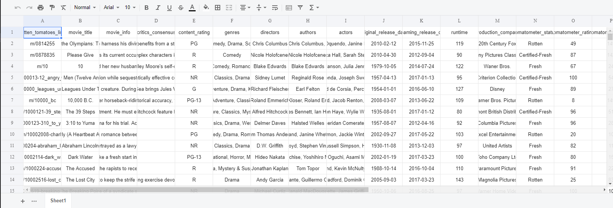
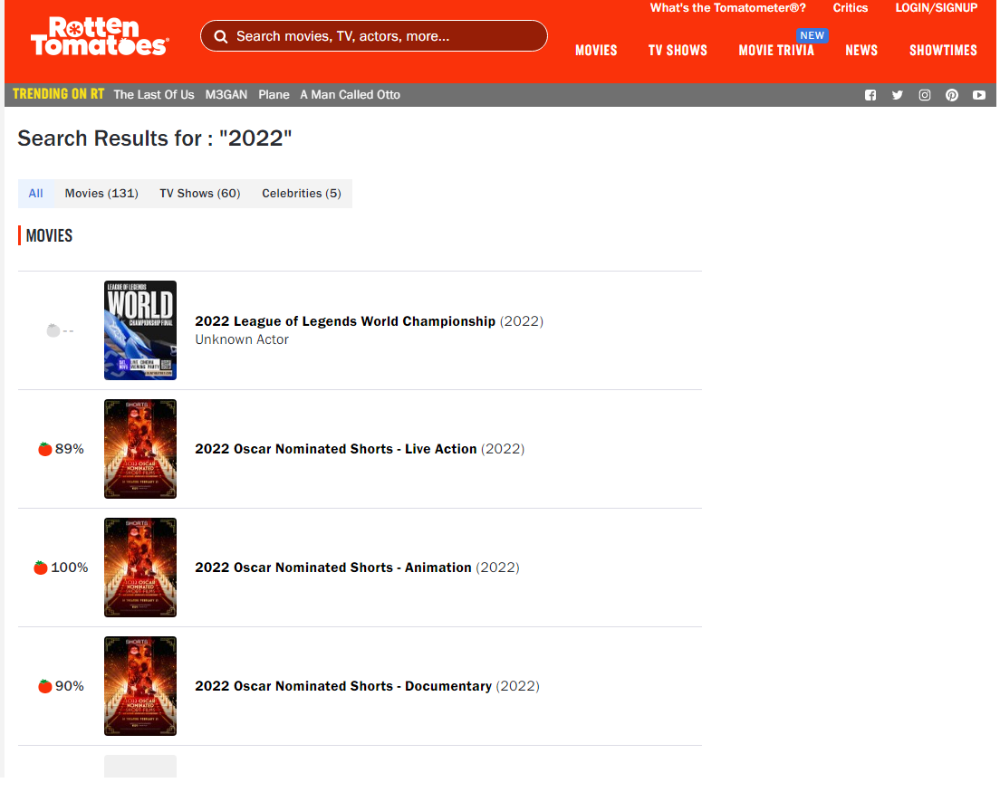
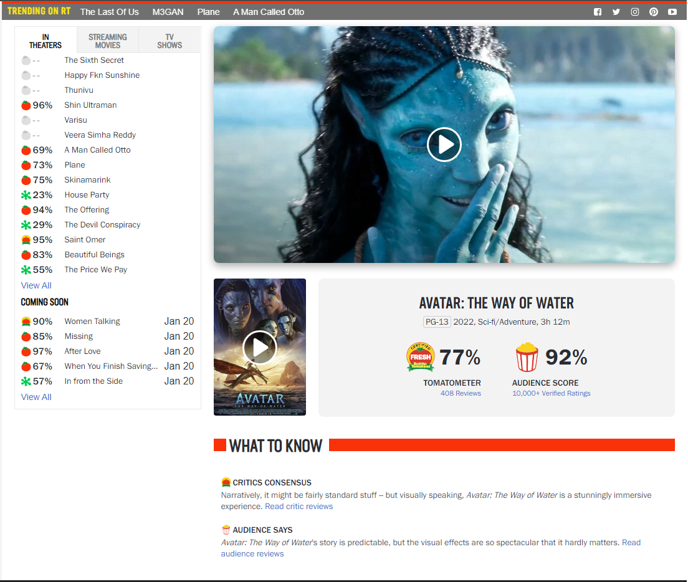
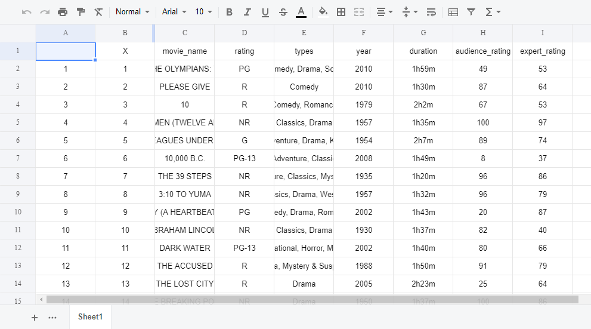

Afin de mettre en place cet algorithme de recommandation, nous avions besoin de récupérer un maximum de données liées aux informations sur chaque film sur le site RottenTomatoes. Pour cela, un jeu de données a été mis à notre disposition par le site
Kaggle
Le premier fichier en notre possession recense l’ensemble des films avant l'année 2020. Dans ce fichier csv, ces données sont décrites par 22 variables qualitatives. Au total ce fichier représente 17731 films.

Afin de compléter et d'enrichir notre base de données, nous avons décidé de recueillir plus d'informations sur les films sortis après 2020 sur le site RottenTomatoes. Cependant, nous avons rencontré les problèmes suivants lors de la collecte de données sur ce site
1. Pas d’API disponible
Bien qu'il existe des API sur internet pour récupérer les données de ce site, ces dernières ne fonctionnent pas car le format du site a changé à certaines périodes. Nous devons donc utiliser une méthode manuelle pour récupérer les données.
Le site RottenTomatoes ne propose pas de fonctionnalités de recherche avancées telles qu'une liste de films classés par genre, année de sortie, acteurs ou réalisateurs. Si vous recherchez des films sortis en 2022, le site ne vous affiche que les films dont le nom contient "2022".

Pour contourner cette limitation, nous avons utilisé la solution consistant à accéder au site movieweb qui regroupe tous les films de 2021. Ensuite, nous avons utilisé la méthode XPath pour récupérer une liste de films. Le résultat obtenu est le suivant :"
En remplaçant le caractère "-" par le caractère "_" et en insérant la chaîne de caractères après l'URL "https://www.rottentomatoes.com/m/", nous accédons directement aux informations d'un film spécifique. Nous pouvons ensuite crawler les données du film à partir de cette adresse spécifique.
2. Complexité du site

Sur ce site, on peut récupérer par XPath le nom du film, l’année de réalisation, les genres, la duration.
Cependant, l'obtention des deux paramètres "Tomatometer" (score de critique) et "Audience score" s'est avérée plus complexe. En effet, sur le site web, il y a également des critiques d'autres films (partie droite de la page). Ces scores étant inclus dans un même élément, ils ne peuvent pas être récupérés en utilisant la même méthode que pour les autres informations dessus. Pour palier cela, nous avons utilisé Selenium et Python.
Nous utilisons le Chrome Webdriver pour ouvrir un site web et extraire les informations contenues dans son code HTML. Pour cela, nous créons un objet ChromeOptions qui permet de définir l'option "sans tête" (headless) et de spécifier que l'interface graphique ne doit pas être affichée. Nous utilisons également XPath pour sélectionner les informations relatives aux films sur le site web.
En combinant les données des films sortis avant 2020, nous avons finalement une base de données suivant:
